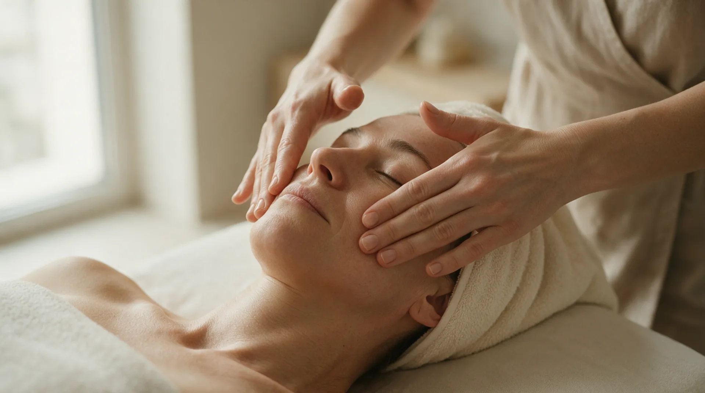

Facial massage · Prague 4
Facial Massage in Prague
Deep, multi-layered care for the face, neck, décolleté and head. It releases the tension held in your expression, softens lines and brings tone back to the skin - no needles, no downtime.
What facial massage is
Facial massage is a manual treatment that works with the muscles, fascia and lymph of the face. Our expression is under constant tension - we frown at screens and clench the jaw under stress. Over time that tension presses static lines into the skin and pulls the features downward.
Targeted facial massage dissolves that tension. Circulation improves, retained water drains away, and the face visibly brightens within a single treatment. This is non-invasive facial rejuvenation - done entirely by hand, with no needles and no machines.
How the treatment works
- Cleansing and skin reading I gently remove make-up and look at where tension sits and where fluid is being held.
- Releasing neck and décolleté We start lower than you expect - a tight neck holds the whole face down.
- The facial massage itself A combination of deep fascial strokes and gentle lymphatic drainage across the face.
- Head massage and settling The treatment closes with a head massage. Most clients fall asleep during it.
What facial massage does
- softens expression lines and forehead lines
- firms the jawline and lifts the features
- drains retained water and reduces under-eye puffiness
- brightens tired skin and improves circulation
- releases a clenched jaw and neck tension
- slows skin ageing without any invasive procedure
Who it suits
Facial and décolleté massage suits anyone who spends their days at a screen, feels a clenched jaw, or is noticing first lines and a softening jawline. It also works beautifully as facial rejuvenation before a wedding, a shoot or an important occasion.
When we do not massage
- active acne, cold sores or skin inflammation
- recent fillers or botox (wait 2–3 weeks)
- recent chemical peel or laser treatment
- fever and acute illness
- lymphatic system disorders without a doctor's approval
Not sure? Call me before booking on +420 721 761 411 and we will talk it through.
Price of facial massage
Frequently asked questions
How much does facial massage cost in Prague?
The signature massage of the face, neck, décolleté and head is 1 600 CZK for 60 minutes. Shorter targeted facial massages start at 800 CZK.
Does facial massage help with wrinkles?
Yes, with expression lines. The massage releases the tightened muscles holding the line and improves circulation. It will not erase deep static wrinkles, but it softens them considerably.
How quickly will I see a result?
Brightness and reduced puffiness are visible straight after the first treatment. Firming the jawline needs a course, usually 6 to 10 sessions.
How often should I come?
For visible change I recommend once a week for 6 to 10 weeks. After that one maintenance massage a month is enough.
Can I have facial massage after botox?
Yes, but not immediately. After botox or fillers, wait at least two to three weeks for the product to settle.
Book your facial massage
The studio is in Prague 4 - Nusle, a short walk from Pankrác and Vyšehrad. Booking online takes a minute.
Other facial massages
Where to find us
Děkanská vinice I 819/16, 140 00 Praha 4 - Nusle
Opening hours: Tue, Thu, Fri 9:00-20:00 · Sat 10:00-17:00